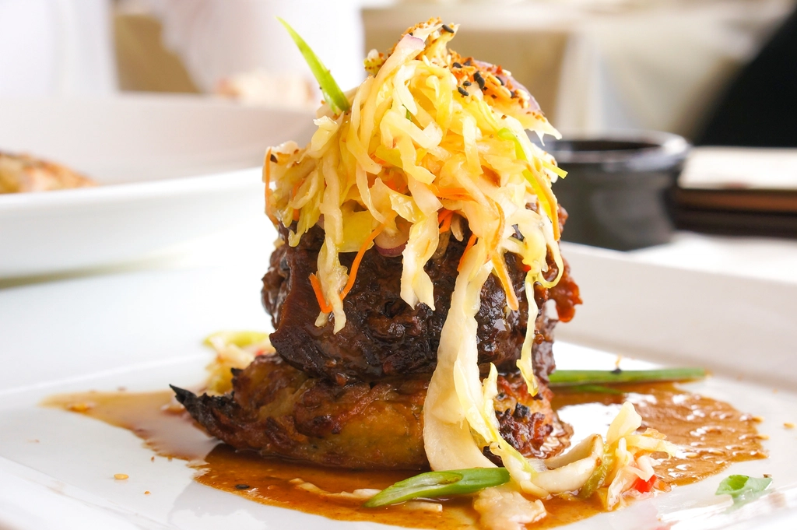
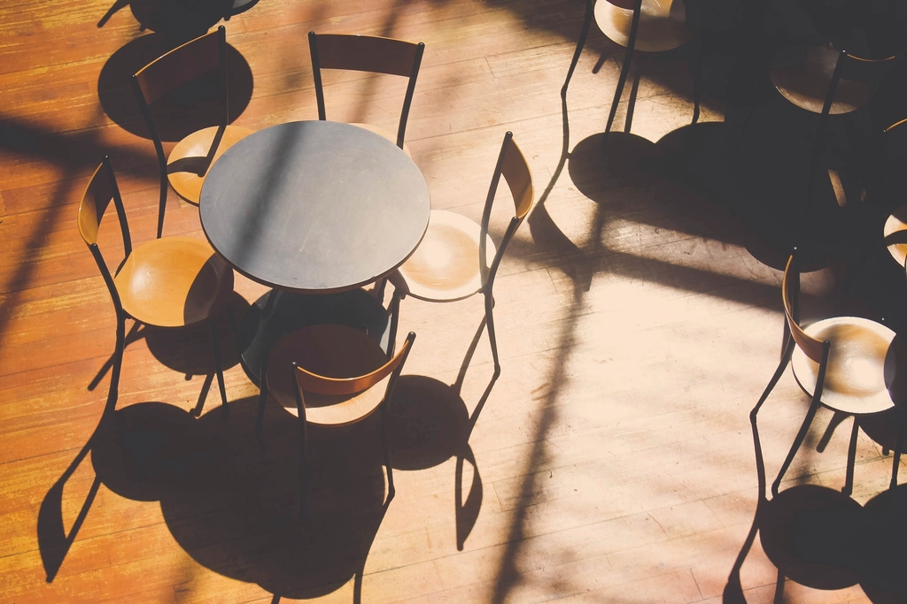
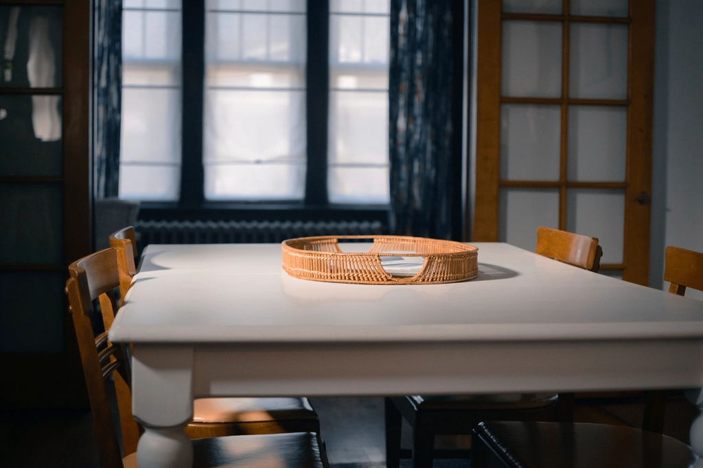

01
ハンバーグステーキ
注文が入ってから、鉄板の上でジュウジュウと音を立てながら仕上げる一皿。熱い鉄板にのったまま食卓へ運ばれるので、着席してからも湯気とソースの香りが立ちのぼります。肉感のあるどっしりとした生地に、甘めに仕立てたソースをたっぷりと。子どもから大人まで箸が止まらない、うえきingの看板メニューです。
※価格は貴店確認の上ご記入ください
新潟県小千谷市の町洋食
新潟市時代から数えて、約30年前後。小千谷の町で鉄板を温め続けてきた洋食店です。
湯気の先へ、スクロール。
30年前後
営業のあゆみ
新潟市時代を含め、小千谷で長く鉄板を守ってきました
132件
Googleクチコミ
訪れたお客様の声が積み重なった数です
4.3
Google評価
多くの方に高く評価をいただいています
鉄板1枚
一皿ずつの流儀
ご注文をいただいてから、一皿ずつ鉄板でジュウジュウと仕上げます
OUR HOSPITALITY
うえきingを切り盛りするのは、ご夫婦おふたり。ご主人が鉄板の前で腕をふるう一方、奥様の柔らかな接客が、この店をあたたかい場所にしています。急かすことなく、ひとつひとつの注文に丁寧に応じる接遇は、常連のお客様からも初めて訪れたお客様からも、変わらず好評をいただいているところです。店内はリフォームを経て清潔に保たれ、壁一面に広がるウッドの内装が、鉄板の熱気とはまた違うやわらかな温もりを添えています。忙しい日常の合間に、少しほっとできる時間を過ごしていただけたらと、ご夫婦で日々営業を続けています。
店内の雰囲気は Instagram でも少しずつご紹介しています。@uek.ing
INSIDE THE SHOP
リフォームを経て、清潔で落ち着いた雰囲気に整えられた店内。壁一面に広がる木目のインテリアが、訪れる人をやわらかく迎えます。


VOICE
鉄板でジュウジュウ、熱々の状態で提供。肉感も良く、ソースの味付けも美味しい。
チキンステーキとポークステーキ、どちらも焼き加減が素晴らしい。
チキンステーキは皮がパリパリ、お肉はジューシー。東京から来た甲斐がありました。
壁一面ウッドで覆われていて、暖かみを感じられます。
Googleクチコミより（抜粋・一部編集）
Googleマップでもっと見るACCESS